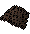
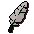
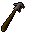
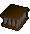

Fishing - Non-Members' Table
Some fish will require a degree of skill, while others will simply require the right equipment.
| Sea Creature | Level | Technique | Tool | Experience Gained | Location |
![[image]](../../img/main/kbase/items/food/fish/crayfish_raw.gif) Crayfish Crayfish |
1 |
Crayfish cage | ![[image]](../../img/main/kbase/items/fishing_tools/crayfish_cage.gif) |
10 | Lumbridge West of Sinclair Mansion* |
![[image]](../../img/main/kbase/items/food/fish/shrimp1.gif) Shrimp Shrimp |
1 |
Net |  | 10 | Catherby* Karamja dock Draynor Village |
![[image]](../../img/main/kbase/items/food/fish/sardine1.gif) Sardine Sardine |
5 |
Bait | ![[image]](../../img/main/kbase/items/fishing_tools/object4.gif) |
20 | Catherby* Karamja dock Draynor Village |
![[image]](../../img/main/kbase/items/food/fish/herring1.gif) Herring Herring |
10 |
Bait | |
30 | Catherby* Karamja dock Draynor Village |
![[image]](../../img/main/kbase/items/food/fish/anchovy.gif) Anchovies Anchovies |
15 |
Net | 40 | Catherby* Karamja dock Draynor Village |
|
![[image]](../../img/main/kbase/items/food/fish/trout1.gif) Trout Trout |
20 |
Fly fishing |  | 50 | Ardougne River* Lumbridge River Barbarian Village Seer's Village Lake* |
![[image]](../../img/main/kbase/items/food/fish/pike1.gif) Pike Pike |
25 |
Bait | |
60 | Ardougne River* Lumbridge River Barbarian Village Shilo Village* Seer's Village Lake* |
![[image]](../../img/main/kbase/items/food/fish/salmon1.gif) Salmon Salmon |
30 |
Fly fishing | 70 | Ardougne River* Lumbridge River Barbarian Village Seer's Village Lake* |
|
![[image]](../../img/main/kbase/items/food/fish/tuna1.gif) Tuna^ Tuna^ |
35 |
Harpoon |  | 80 | Fishing Guild* Catherby* Karamja Dock Brimhaven* |
![[image]](../../img/main/kbase/items/food/fish/lobster1.gif) Lobster Lobster |
40 |
Lobster cage |  | 90 | Fishing Guild* Catherby* Karamja Dock Brimhaven* |
![[image]](../../img/main/kbase/items/food/fish/swordfish1.gif) Swordfish^ Swordfish^ |
50 |
Harpoon | 100 | Fishing Guild* Catherby* Karamja Dock Brimhaven* |
* This location is members only.
^ It is possible for members to catch two of this fish per fishing attempt. Click here to find out more.
Click here to view the Fishing FAQs

More articles in
Fishing
|
|
|
Further Help
Need more help? Come chat with us!
|
|